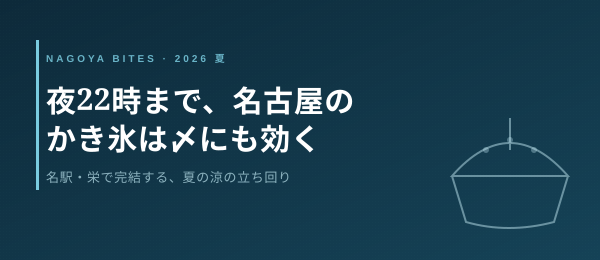

季節・イベント短信
夜22時まで、名古屋のかき氷は〆にも効く
猛暑の名古屋。かき氷は「昼のデザート」だと思われがちだが、2026年の夏は事情が変わってきた。名駅・栄に登場した専門店は夜遅くまで開き、飲んだ後の〆に一杯という使い方が現実的になっている。期間限定営業ゆえの「いつ終わるか」も含め、この夏の涼の立ち回りを業界人目線で短く整理する。

この記事はNAGOYA BITES — 名古屋の厳選1,100店超を業界視点で紹介するグルメガイドの一部です。
2026年7月時点で名駅と栄の話題は「氷匠よこ田」。岐阜の名店・赤鰐の師匠が監修する夏季限定の間借り店で、名駅店（西区名駅3・サンタウン3F）は7月4日、栄店（中区栄3・なご八内）は7月11日に開いた。特筆すべきは営業時間で、日〜木は14時から22時まで。昼の甘味ではなく、夜の一杯として——つまり飲んだ後の〆氷として成立する。名古屋の夏の夜遊びに、締めのラーメンでも甘味処でもない新しい選択肢が一つ増えた格好だ。
老舗側も動く。尾張名古屋の食楽堂「蓬左（ほうさ）」は7月1日から7月26日までの期間限定で、濃厚抹茶のマスカルポーネ、和紅茶スパイス、完熟いちご×抹茶プリンの3種を出す。近年の名古屋の進化系かき氷は1杯1,200〜2,000円前後が相場で、フルーツを盛る店では2,000円を超えることも珍しくない。期間限定のかき氷は「いつまで食べられるか」が命で、蓬左のように終了日が明示された店は逆算しやすい。一方で間借り・夏季限定型は会期が読みにくいので、公式SNSで当日の提供メニューと臨時休業を確認してから動くのが鉄則だ。
業界人の視点で一つ。夏の土日、人気かき氷店は午後に売り切れる。氷を削るオペレーションは1杯あたりの手数が多く、席の回転が利かないからだ。だから狙うなら開店直後の一巡目か、夜まで開く店の平日夜。この2枠が、行列と売り切れを避ける現実的な答えになる。
Inside Perspective — 業界人の目利き
- 「氷匠よこ田」名駅・栄店は日〜木が夜22時まで営業。かき氷を昼の甘味でなく“飲んだ後の〆”に回せるのが2026年の新機軸。
- 期間限定・間借り営業は会期が命。蓬左は7/26まで終了日が明示され逆算しやすい。間借り型は公式SNSで当日メニュー・臨時休業を必ず確認。
- 夏の土日は午後に売り切れる。氷削りは手数が多く席の回転が利かないため、狙い目は開店直後の一巡目か平日夜。